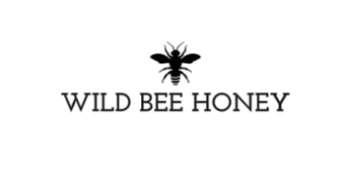

Miere de floare de portocala
Descriere
Mierea din floare de portocal este obtinuta din flori albe de lamai si portocal.
Este un produs natural bogat in minerale precum zinc, potasiu, bor, mangan, magneziu, calciu, seleniu, cupru si sodiu si, de asemenea,
in fructoze si glucoze, ce fac ca acest produs sa fie o sursa de energie cu o absorbtie mai mare decat a zaharului.
Acest tip de miere prezinta o culoare asemanatoare cu cea a chihlimbarului, are o aroma subtila si placuta de floare de portocal.
Aceasta miere este potrivita in special pentru oamenii agitati sau care sufera de insomnie, anxietate sau stres,
avand un efect sedativ si antispastic care actioneaza ca un tranchilizant natural. In plus, beneficiaza de proprietati
antibacteriene ce sprijina sistemul imunitar, ajuta la prevenirea cancerului si protejeaza corpul de radicalii liberi, reducand riscul de boli cronice.
Mierea naturala are tendinta de a se solidifica la temperaturi scazute, prin urmare este recomandata incalzirea sa la cuptorul cu microunde sau in apa fierbinte inainte de a fi consumata.
Greutate: 250g
Ingrediente: miere de floare de portocal.
Caracteristici: fara gluten, fara lactoza, 100% vegetala.
Brand: Wild Bee Honey
